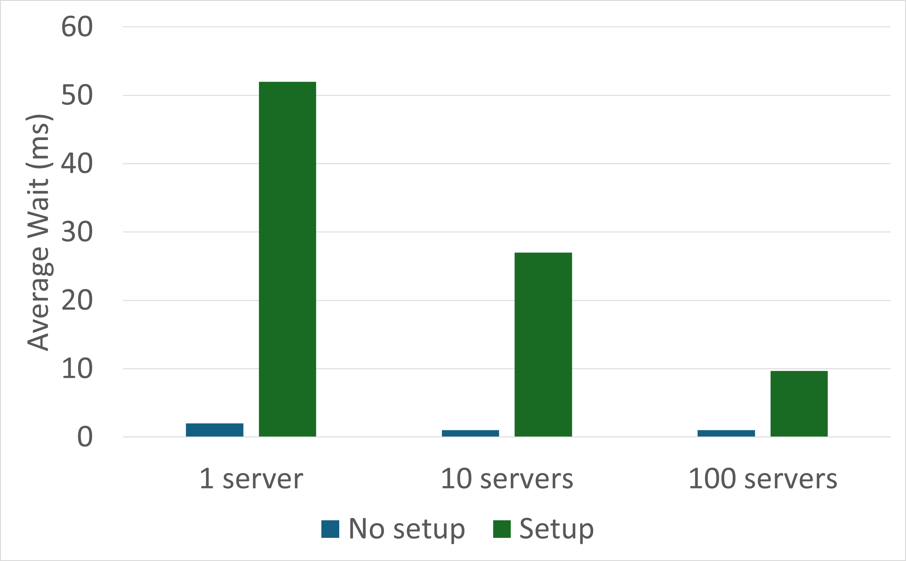
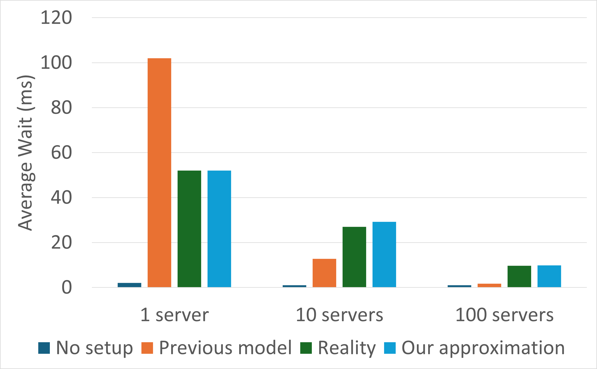

Understanding Setup Times
Why Understand Setup Times?
Setup Times = Waiting + Frustration
Nobody likes waiting in line. But some of the most frustrating experiences that I’ve ever had waiting are when I get in a super long line, I peek around to the front of the line, and I see that the server isn’t even ready to serve –they’re still setting up! It’s terrible, and it happens everywhere:
- You’re at the store and you just want to buy a pack of gum, but somehow it takes forever for the cashier’s register to boot up.
- It’s lunch and you just want a quick slice of pizza, but somehow the pizza oven still needs time to get hot.
- You’re dead-tired from being sick and you just want to grab your antibiotics and go to sleep, but somehow the pharmacist has to go through an excruciatingly long badge-in process.
The frustrating part of these situations isn’t really the waiting per se –kids learn to wait their turn in kindergarten. No, the frustrating part is that you’re waiting and somehow it almost feels unnecessary; why weren’t these servers ready before this huge line formed in the first place? Why do we spend so much time waiting for servers to set up?
Why we wait
Of course, the answer to “why do we wait?” is the usual answer: because not-waiting costs money. In basically all of these queueing systems, you could just have all of your servers running all the time. And if the only thing you cared about was how long people spent waiting, then of course you would just have all of your servers running all the time. But keeping a server on costs money –even if that server is not actively doing work. That’s why, in many queyueing systems, instead of keeping their servers on all the time, system managers will actively scale the number of servers that are on in a dynamic way. It turns out that if you do this ’‘dynamic scaling’’ in the right way, then you can cut down on operating costs a lot. For example, Google’s version of dynamic scaling, called Autopilot, was able to cut average resource waste in half, from 46% to 23%. And keep in mind that when we say ``wasted resources,’’ we’re not just talking about wasted money –we’re also talking about unnecessary CO2 emissions, and, in the labor setting, unnecessarily long hours for workers.
Why we (only sometimes) wait
Alright, so then why doesn’t everyone implement the most-extreme version of dynamic scaling they can imagine, always keeping their system an inch away from being understaffed? Well, the answer is simple: nobody likes waiting, and if your customers have to wait for too long, then they’ll take their business elsewhere. If you want to keep your customers while also conserving resources, you’ve got to balance waiting with wasting when you design your system. In the best case scenario, you find a design sitting in that optimal sweet spot, where your system uses just enough resources to be sure that your customers don’t spend too long waiting. Unfortunately, we’re not even close to being able to find that sweet spot, since we haven’t been able to answer one of the most basic questions in this space: “How does the average waiting time behave in systems with setup times?”
Understanding Setup: What we know
Setup times hurt.
At this point you might be wondering whether setup times actually hurt performance that much. The short answer is: yes, in real systems, setup times can hurt a lot. The longer answer is that the effect of setup times on a system is a complex interaction between 1) the length of a typical setup time, 2) the length of a typical service time (the average length of a job), 3) the total number of servers available, and 4) the arrival rate of jobs. In real systems, where setup times are hundreds —even thousands— of times larger than service times, the average waiting time of a customer can be almost wholly determined by the system’s setup behavior. 
But understanding setup is hard.
That said, understanding how and why setup times destroy queueing performance has taken the better part of a century. Formal study began with Welch’s paper on “exceptional first services.” In his study of single-server systems with setup times, he obtained a closed-form expression for not just the average waiting time, but the entire waiting time distribution. In the multiserver case, little was known until a seminal 2014 paper of Gandhi et. al on “Recursive Renewal Reward.” In their breakthrough paper, the authors develop and study a model of multiserver setup, demonstrating that, given a number of servers \( k \), the average waiting time can be computed by solving a system of \( O(k^2) \) quadratic equations.
However, even considering the Gandhi et. al paper and all the work it spawned, we still don’t really understand setup. In particular, all theoretical work on setup times since that Gandhi paper has studied essentially the same model. The model they study is very much an approximate model: it includes an unrealistic assumption about the setup process to make theoretical analysis easier. Unfortunately, this assumption causes the model to dramatically underestimate the harm caused by setup times, especially when looking at larger systems. However, even after acknowledging that the Gandhi et. al model underestimates the setup effect, most setup researchers continue to use their flawed model.
What makes setup hard?
To fully understand why the flawed Gandhi et. al model is still in use, we first need to discuss in a little bit more detail why setup systems are so hard to understand.
First reason: The setup effect can be invisible.
There are two reasons why setup is so hard to understand. First, the harm caused by setup times can be invisible. For example, if I’m the first person in line when the pharmacist starts badging in, then I can directly see the reason why I’m waiting; I can observe the setup process. But, while I’m waiting in line, other people will get in line behind me, and when I finally do receive service, the line might be pretty long. At that point, everyone in the line knows exactly why we have been waiting for so long: setup times. But if another customer arrives after the pharmacist has finished badging in, then they’ll have no idea why the line is so long; the harm caused by setup times has become invisible.
Second reason: Servers interact.
The second hard-to-understand aspect of setup times only emerges when there are multiple servers in play. Setup gets more complicated in multiserver systems because now the work of one server can now influence the setup behavior of another. For example, suppose there are two pharmacists on hand, but only one is currently badged in and serving customers ––the other pharmacist is in the back, filling prescriptions. If the line gets too long, the pharmacist in the back might think they need to start serving customers, and thus begin the long drawn-out badge-in process. If, however, the already-serving front pharmacist somehow quickly works through the line, then it might not even make sense for the not-yet-serving back-pharmacist to complete the badge-in process; it might make sense for them to cancel their setup. Note that something like this would never happen if there was only one pharmacist, since, if there’s only one pharmacist and they’re currently badging in, there’s no way for the line to disappear. More generally, if we scale up when the line is long and scale down when the line is short/empty, then the setup behavior of our servers becomes governed by how quickly the already-on servers are working. This interaction between servers makes the behavior of multiserver setup way, way more complex, since, if you cancel setup sometimes, then you now need to start individually tracking how far each server has gotten in the setup process.
Where we went wrong before
The main issue with all the previous research on setup lies in how they dealt with this “interaction” complication. For context, when studying complicated systems, reality is often way too hard to understand directly. In order to make progress, researchers need to make simplifying assumptions about various aspects of their system. Done correctly, these simplifying assumptions can allow us to discard the unnecessary details of a system and draw meaningful conclusions about the parts that actually matter. That said, if these simplifying assumptions are too unrealistic, then, even if we can study the simplified model, the conclusions we obtain could end up meaning very little; this is exactly what happens in the previous model of setup.
First issue: An unrealistic, but tractable model.
Before our work, every studied model of multiserver setup made an extremely unrealistic simplification. I mean ``extremely unrealistic’’ in two different ways. First, the model behavior is just weird. Without going too much into detail, by assuming that setup times are distributed Exponentially, in the previous model, the speed of setup ends up scaling with the number of servers in setup. For example, if 100 servers are setting up, the first few servers end up setting up ~100 times faster. In real systems, this couldn’t be further from what actually happens: when you turn on a computer, it goes through a series of steps which takes almost the same amount of time, every time. That said, plenty of useful models contain strange or unrealistic edge cases in their behavior; that, in and of itself, is not enough to prevent a model from being useful.
Second issue: Unrealistic behavior => Poor predictions
However, whereas the unrealistic behavior of their model might be forgivable, the second problem of prior work practically dooms it: previous models vastly underestimate the harm caused by setup times. In our experiments, we’ve found that, compared to what actually happens, the average waiting time of a customer can be orders of magnitude larger than what previous models predict. Although the predictions of our model and the previous model are within are (relatively) close when studying small systems, the relative gap between these predictions rapidly widens as we increase the system scale. This gigantic prediction error makes the previous model essentially impossible to use in any practical setting.

How our results change the game
Our results change the game in three major ways: Compared to previous work, we 1) study a much more realistic model, 2) prove much stronger theoretical results, and 3) greatly improve upon the practical utility of existing work. Let’s describe each point in a little more detail.
Our model is more realistic.
First, let’s talk about how the setup process in our model is more realistic than in previous models. As we noted before, there’s a big difference in performance between systems with and without setup times. But previous models make an unrealistic assumption about setup times, an assumption which leads them to dramatically underestimate the harm caused by setup times. In particular, their assumption makes it so that, when more servers set up, the setup process happens faster. In contrast, in our model, we make the setup time Deterministic: setup times take the same amount of time, every time. If booting up a server takes a minute, then booting up 100 servers also takes a minute. In other words, we study setup times as they actually occur in real systems.
Our results are stronger.
Second, our main results are stronger than most (if not all) previous results on multiserver setup. Our two main results investigate the average waiting time in our new, more realistic model. In particular, we give both an upper bound and a lower bound on the average wait in our model, and also show that these upper and lower bounds differ by at most a multiplicative factor. Moreover, these bounds we derive are just explicit closed-form formulae; no additional computation is needed (though the bounds are somewhat hard-to-parse to the untrained eye, and so are omitted from this particular blogpost). While our results are more meaningful due to our more realistic model, these are also the first closed-form results ever for any finite-server system with setup times.
Our results are more practically useful.
These bounds also give rise to our practical contribution: by combining the analysis of our upper and lower bounds, we also construct an easy-to-compute and extremely accurate approximation to the average waiting time. And while I won’t bore you with the formula, this approximation goes beyond the state-of-the-art in three important respects:
- First, as we’ve already stated, our approximation gives extremely accurate predictions, whereas the previous state-of-the-art model underpredicts by orders of magnitude.
- Second, our approximation is fast/cheap to compute. Since it is a simple rational function of the system parameters, it can be easily computed, even by hand. By contrast, in order to generate a single prediction, the previous state-of-the-art required one to solve a large system of quadratic equations.
- Third, our approximation gives intuition. As discussed, since our approximation is a simple formula, one can directly observe how and why the waiting time will increase or decrease in response to some alteration in the system parameters. On the other hand, it’s difficult to anticipate someone getting a lot of intuition from the previous state-of-the-art’s complicated system of equations.
In other words, our approximation is better, faster, and stronger. These three aspects of the approximation together make it much, much easier to design multiserver systems with both performance and efficiency in mind.
Conclusion
Given the above, you’re probably chomping at the bit to learn how we managed to prove such uniquely powerful results, especially given that the model we study has Deterministic setup times, which are notoriously difficult to analyze with existing methods. Unfortunately, we don’t have time here to properly discuss the method that we developed to analyze our complicated Deterministic model. However, those interested will be able to find an in-depth description of the MIST method in my thesis document, available on my website, by the time I defend (May 2nd, 2024). And don’t worry, it’ll definitely be posted by that day —no need to factor in setup times.